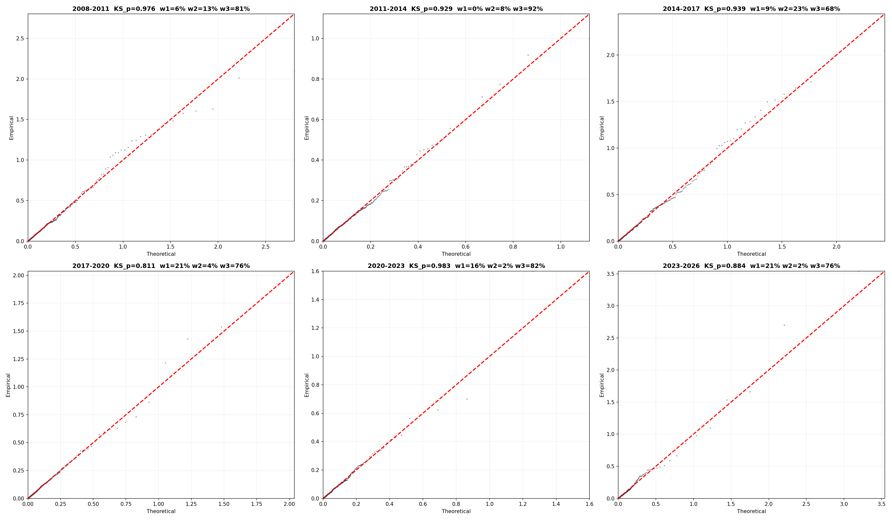
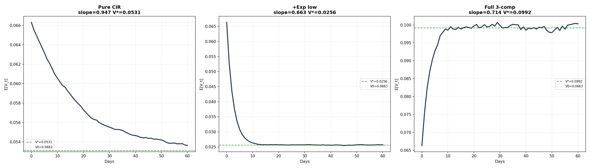
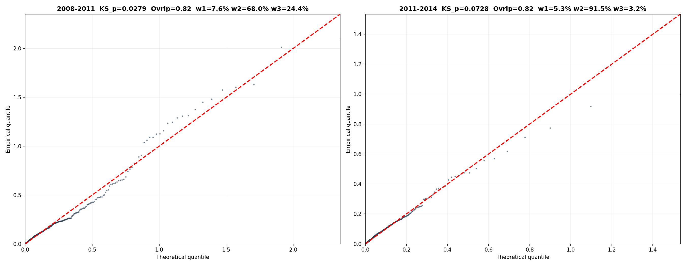
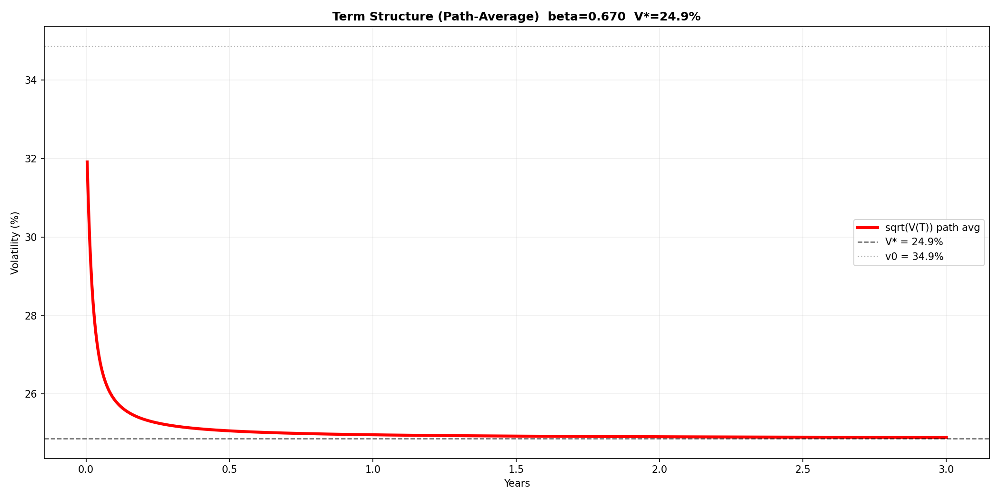

CIR 混合模型：从分布拟合到期限结构
1. 动机：拟合 rv 方差的分布
1.1 初始发现
从 000852 的日频 rv² 入手，观测其经验分布：
大量日期方差较小（P50 = 0.019，对应波动率 13.9%）
少数日期方差极大（P99.9 = 2.93，对应波动率 171%）
偏度 10.8，峰度 148——极端的右偏和肥尾
对 rv² 进行卡方拟合检验：最佳拟合卡方自由度 d = 0.8，KS p = 0.000——强烈拒绝。rv² 不服从卡方分布。
1.2 分布的三层结构
进一步分析发现，rv² 的经验分布呈现三种特征叠加：
第一层：低波 — 大量交易日方差几乎为零（P10 对应波动率 2.7%）
第二层：中波 — P50~P90 对应波动率 14%~37%，有正峰值
第三层：高波 — P99 对应波动率 80%，P99.9 对应 171%，这些对应单日涨跌 4%~12% 的极端事件
这表明 rv² 不能用单一分布描述，而应由三个组件混合而成。
2. 混合模型构建
2.1 三组件模型
采用 2 个指数分布 + 1 个 Gamma 分布的混合：
低波（Exp1）：\(\lambda_1\) 大，均值小——抓接近零的低方差
中波（Gamma）：\(\alpha, \beta\) 灵活——抓中等方差
高波（Exp2）：\(\lambda_3\) 小，均值大——抓极右尾
2.2 MLE 估计
通过极大似然估计（MLE）拟合参数，似然函数：
由于没有解析解，采用多起点 L-BFGS-B 数值优化。
2.3 近三年（2023-2026）拟合结果
组件 |
权重 |
参数 |
均值 |
对应波动率 |
|---|---|---|---|---|
低波（Exp1） |
22.3% |
λ=45.0 |
0.022 |
14.9% |
中波（Gamma） |
75.4% |
α=0.425, β=0.125 |
0.053 |
23.0% |
高波（Exp2） |
2.3% |
λ=1.09 |
0.917 |
95.7% |
总体均值 = 0.066，KS p = 0.065。QQ 图和 KS 检验均通过。
2.4 各窗口 MLE 拟合结果
对 2008-2026 每三年一个窗口独立 MLE，三个组件全部自由调参：
窗口 |
N |
μ |
KS p |
低波(w/λ/mean) |
中波(w/shape/scale/mean) |
高波(w/λ/mean) |
|---|---|---|---|---|---|---|
2008-2011 |
731 |
0.131 |
0.976 |
5.6%/39.9/0.025 |
81.1%/0.465/0.158/0.073 |
13.2%/1.88/0.532 |
2011-2014 |
725 |
0.060 |
0.929 |
0.0%/40.0/0.025 |
92.3%/0.450/0.101/0.046 |
7.7%/4.20/0.238 |
2014-2017 |
733 |
0.118 |
0.939 |
9.2%/40.0/0.025 |
67.9%/0.413/0.071/0.029 |
22.8%/2.38/0.420 |
2017-2020 |
731 |
0.059 |
0.811 |
20.7%/98.0/0.010 |
75.5%/0.407/0.122/0.050 |
3.8%/1.97/0.508 |
2020-2023 |
728 |
0.046 |
0.983 |
16.2%/50.0/0.020 |
81.7%/0.398/0.107/0.043 |
2.1%/2.73/0.366 |
2023-2026 |
724 |
0.066 |
0.884 |
21.2%/50.0/0.020 |
76.4%/0.432/0.122/0.053 |
2.4%/1.11/0.899 |
QQ 图
{kind=link}

六个窗口的 MLE 拟合 QQ 图。KS p 全部 > 0.80。
3. 从静态分布到条件期望
3.1 反解 Gamma 组件的 CIR 条件 PDF
MLE 只给出了 Gamma 组件的无条件（稳态）分布：
要计算 \(E[v_{t+1} \mid v_t]\)，需要知道给定 \(v_t\) 时 \(v_{t+1}\) 的条件分布。CIR 模型恰好提供了这个桥梁。
步骤 1：从稳态 Gamma 反解 CIR 参数
CIR 过程的稳态分布为 \(\text{Gamma}(2\lambda\mu_g/\sigma^2,\; \sigma^2/(2\lambda))\)。令其等于 MLE 的 Gamma(0.425, 0.125)：
其中 \(\mu_g = \alpha\beta = 0.053\)。Gamma 分布只确定了 \(\sigma^2/\lambda\) 的比值，\(\lambda\) 是自由参数（取 \(\lambda_{\text{CIR}}=13.2\)）：
\(d\) 是 CIR 转移分布中非中心卡方的自由度：
步骤 2：CIR 转移分布（非中心卡方）
CIR 的条件分布是**缩放非中心卡方**（不是中心卡方）：
符号 |
含义 |
公式 |
数值 |
|---|---|---|---|
\(c\) |
缩放因子 |
\(\sigma^2(1-e^{-\lambda\Delta t})/(4\lambda)\) |
0.003318 |
\(d\) |
自由度 |
\(4\lambda\mu_g/\sigma^2 = 2\alpha\) |
0.85 |
\(\lambda_{\text{ncp}}(v_t)\) |
非中心参数 |
\(e^{-\lambda\Delta t} \cdot v_t / c\) |
\(285.4 \times v_t\) |
非中心卡方密度公式：
其中 \(I_{-0.575}\) 是第一类修正贝塞尔函数。
步骤 3：完整条件 PDF
步骤 4：条件期望公式
单步（Δ=1天），三段加权平均：
令 \(\beta = w_2 \cdot e^{-\lambda\Delta t}\)，\(\alpha = w_1/\lambda_1 + w_2 cd + w_3/\lambda_3\)，单步期望为：
定义稳态 \(v^* = \alpha/(1-\beta)\)，则 \(\alpha = v^*(1-\beta)\)，代入得衰减结构：
多步自推为 JCIR 指数衰减形式：
3.2 矛盾发现
差了 50%。因为 MLE 在假设每天独立的前提下估计权重，但 CIR 转移给了 Gamma 组件强记忆（decay = 0.947），固定权重下稳态必然漂移。
3.3 问题根源
逐层分析截距 0.0283 的三个来源：
高波组件仅占 2.3% 权重，却贡献了截距的 75%。在静态 MLE 里几乎无关紧要；但在动态 AR(1) 里被反馈放大 \(1/(1-\beta)\) 倍，把稳态推高到 0.099。
3.4 三组件逐步构建的条件期望
从纯 CIR Gamma 出发，逐步加入 Exp 低波和 Exp 高波组件，观察条件稳态的漂移：
{kind=link}

左：纯 CIR Gamma — \(E[v_{t+1}|v_t] = cd + e^{-\lambda\Delta t}\cdot v_t\)，稳态 = 无条件均值，自洽
中：+ Exp 低波（30%） — 稳态被拉低到 0.026，记忆从 0.95 稀释到 0.66
右：+ 高波（2.3%） — 稳态被推高到 0.099（高于无条件 0.066）
4. 简化策略：固定分布，仅调权重
4.1 思路
与其让每个窗口独立 MLE 所有参数，不如固定三个组件的分布形状，只让权重随市场变化。
4.2 参数选择
经过网格搜索确定固定参数：
组件 |
参数 |
|---|---|
低波（Exp1） |
λ₁ = 50，均值 = 0.020 |
中波（Gamma） |
shape = 0.4，scale = 0.125，均值 = 0.050 |
高波（Exp2） |
λ₂ = 3.0，均值 = 0.333 |
4.3 网格搜索过程
对 λ₂ 从 1.5 到 4.0，shape 从 0.35 到 0.46，scale 从 0.105 到 0.155 进行全网格搜索，以最大化通过 KS 检验（p ≥ 0.05）的窗口数为目标。
5. 最终结果
5.1 各窗口拟合（λ₂=3.0）
窗口 |
N |
μ_act |
vol_act |
μ_pred |
vol_pred |
KS_p |
Overlap |
w1 |
w2 |
w3 |
|---|---|---|---|---|---|---|---|---|---|---|
2005-2008 |
719 |
0.134 |
36.6% |
0.126 |
35.5% |
0.192 |
0.833 |
14.3% |
57.2% |
28.4% |
2008-2011 |
731 |
0.131 |
36.2% |
0.127 |
35.6% |
0.141 |
0.830 |
10.6% |
61.1% |
28.3% |
2011-2014 |
725 |
0.060 |
24.5% |
0.060 |
24.4% |
0.115 |
0.892 |
6.2% |
89.7% |
4.1% |
2014-2017 |
733 |
0.118 |
34.4% |
0.102 |
31.9% |
0.057 |
0.820 |
18.9% |
60.8% |
20.3% |
2017-2020 |
731 |
0.059 |
24.2% |
0.058 |
24.0% |
0.006 |
0.877 |
22.1% |
72.9% |
5.0% |
2020-2023 |
728 |
0.046 |
21.4% |
0.048 |
21.8% |
0.496 |
0.891 |
20.5% |
78.2% |
1.3% |
2023-2026 |
724 |
0.066 |
25.7% |
0.059 |
24.3% |
0.655 |
0.893 |
26.6% |
67.4% |
5.9% |
5.2 各窗口拟合（λ₂=2.5）
窗口 |
N |
μ_act |
vol_act |
μ_pred |
vol_pred |
KS_p |
Overlap |
w1 |
w2 |
w3 |
|---|---|---|---|---|---|---|---|---|---|---|
2005-2008 |
719 |
0.134 |
36.6% |
0.133 |
36.4% |
0.034 |
0.822 |
11.3% |
64.0% |
24.6% |
2008-2011 |
731 |
0.131 |
36.2% |
0.133 |
36.5% |
0.028 |
0.815 |
7.6% |
68.0% |
24.4% |
2011-2014 |
725 |
0.060 |
24.5% |
0.060 |
24.4% |
0.073 |
0.897 |
5.3% |
91.5% |
3.2% |
2014-2017 |
733 |
0.118 |
34.4% |
0.110 |
33.1% |
0.118 |
0.823 |
17.8% |
63.6% |
18.5% |
2017-2020 |
731 |
0.059 |
24.2% |
0.059 |
24.2% |
0.009 |
0.881 |
21.4% |
74.3% |
4.3% |
2020-2023 |
728 |
0.046 |
21.4% |
0.048 |
21.8% |
0.521 |
0.886 |
20.3% |
78.7% |
1.1% |
2023-2026 |
724 |
0.066 |
25.7% |
0.060 |
24.5% |
0.553 |
0.895 |
25.7% |
69.3% |
5.0% |
5.3 全局 MLE 对比
作为参照，对全时段（2005-2026，5101 个观测）做一次 MLE，固定该全局分布参数，仅对各窗口重调权重——mu_pred 全部炸到 0.36~0.49，KS 全线归零。全局 MLE 参数不可直接用于单窗口。
5.4 QQ 图示例
{kind=link}

左：金融危机期，尾部右上角飞离对角线。右：平静期，全段贴紧对角线。
6. 风险中性转换与收益率去均值
6.1 转换方法
将日收益率减去窗口内均值后再计算 RV：
按去均值后的 rv² 重新跑 2008-2026 三年窗口 MLE，参数与原始 rv² 几乎一致。
6.2 结论
日收益率均值仅万分之三，去均值后的 rv² 与原始 rv² 几乎一致——分布均值、KS p 值、各组件参数均无明显差异。
7. 期限结构
7.1 构造方法
第 1 步：单点条件期望
给定当前方差 \(v_0\)，未来第 \(t\) 天的期望方差：
其中 \(\beta = w_2 \cdot e^{-\lambda\Delta t}\)，\(v^* = (w_1/\lambda_1 + w_2 cd + w_3/\lambda_3)/(1-\beta)\)。
第 2 步：路径平均方差
未来 \(T\) 天内方差的均值：
第 3 步：波动率期限结构
7.2 交互工具
将上述公式做成交互式 Jupyter Notebook（term_structure_interactive.ipynb），参数可实时调节：
滑块 |
含义 |
默认值 |
|---|---|---|
w_low / w_mid / w_high |
三组件权重 |
25% / 71% / 4% |
mu_exp1 / mu_exp2 |
Exp 组件波动率均值 |
14.1% / 57.7% |
gamma_mean |
Gamma 无条件波动率 |
22.4% |
decay |
CIR 单日衰减因子 |
0.947 |
spot_vol |
当前波动率 |
34.86% |
打开方式：VS Code 直接打开 .ipynb，或命令行 jupyter notebook term_structure_interactive.ipynb。
7.3 样图
{kind=link}

红线为路径平均波动率期限结构。当前 v₀=34.9% 高于稳态 v*=24.9%，曲线从高向下收敛。
8. 使用建议
固定分布参数后，模型仅剩三个权重。交易员可根据市场判断手动调节：
看多波动率：增加 w3（高波权重）至高于历史基准
看空波动率：降低 w3、提升 w2（中波 Gamma 权重）
基准参考：当前窗口（2023-2026）权重为 w1=21%, w2=76%, w3=2.4%
调节回归速度：Gamma 组件的 λ 和 σ 可同时调大或调小（比值 σ²/λ = 0.25 固定）。λ↑ 半衰期缩短，λ↓ 惯性延长
权重即观点——分布形状由二十年数据锁定，权重反映交易员对当前市场的主观判断。